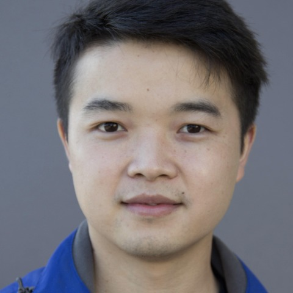
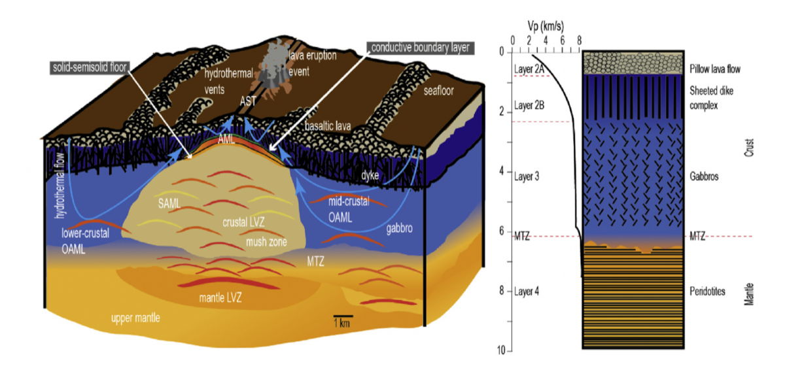
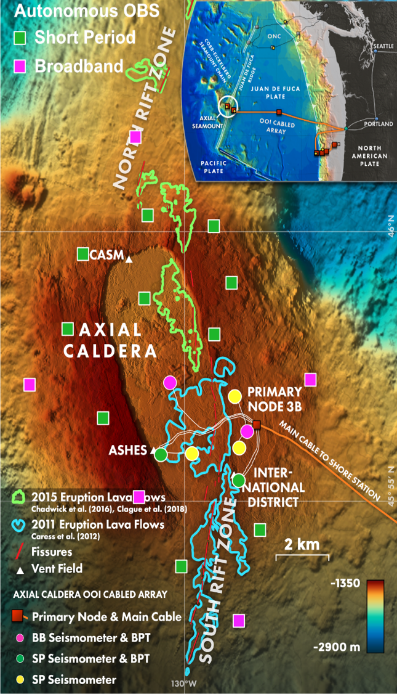
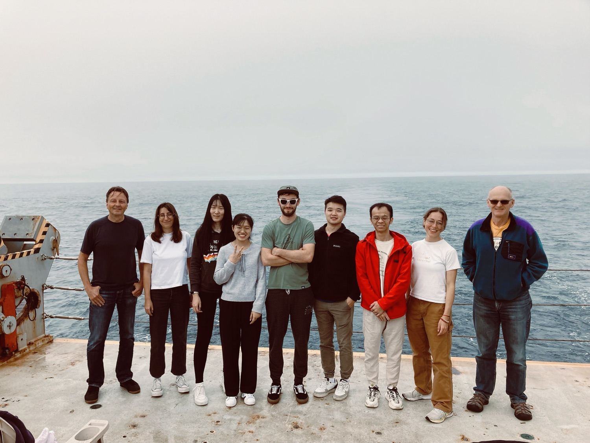
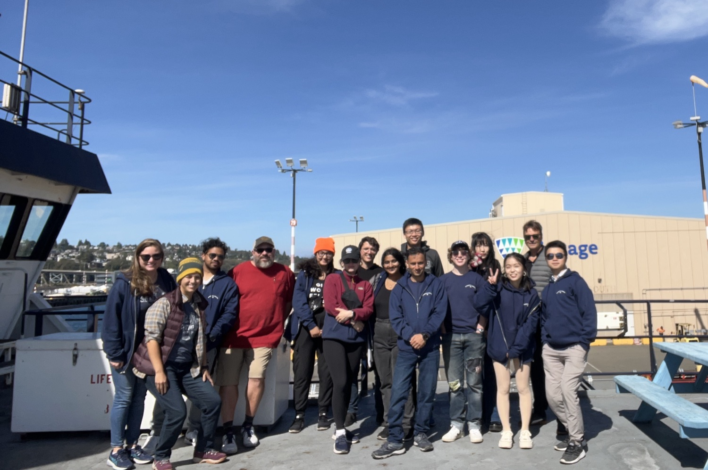
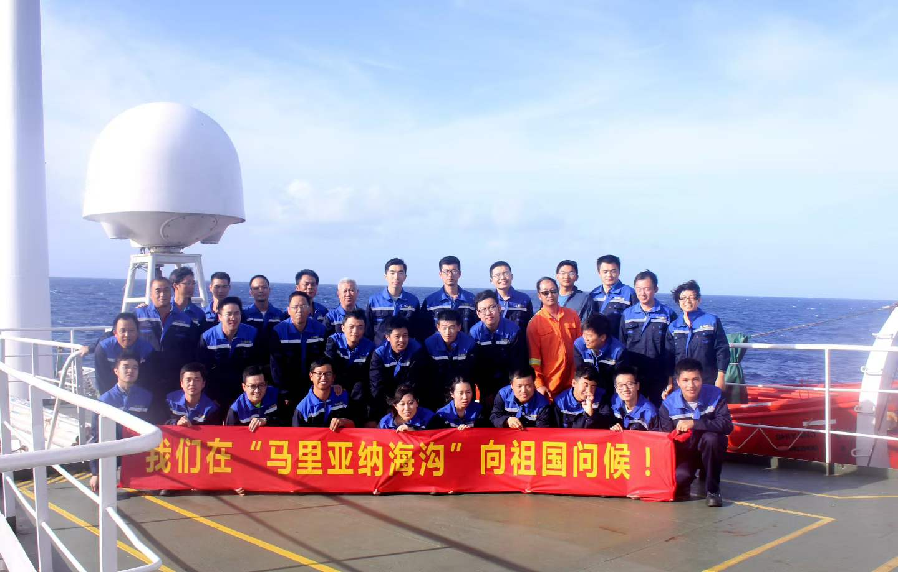
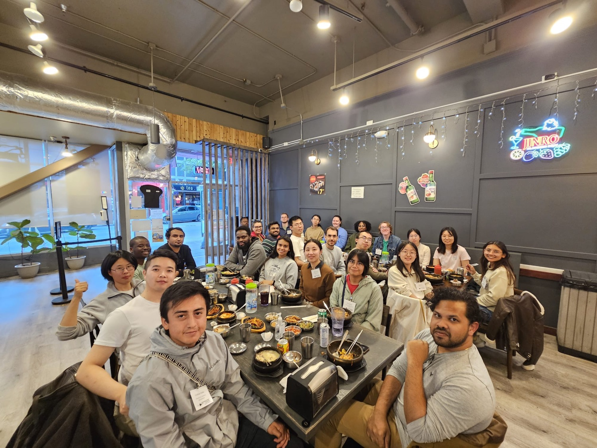
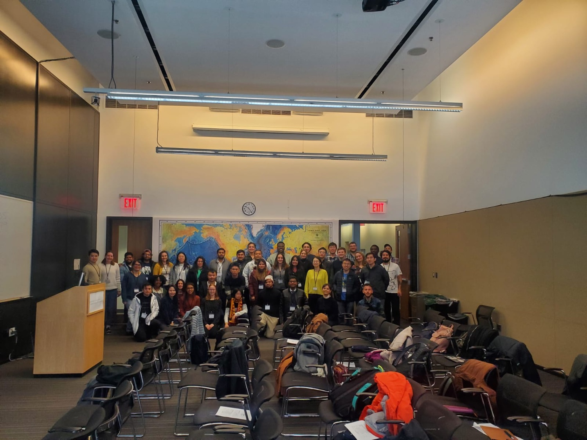

Ph.D. Candidate · Marine Geology & Geophysics
Geophysicist specializing in seismic signal processing and machine learning applications for subsurface characterization and geohazard monitoring.

I am a Ph.D. candidate in Marine Geology and Geophysics at the University of Washington, advised by Dr. William Wilcock. My research focuses on microseismic activity at Axial Seamount, an active submarine volcano on the Juan de Fuca Ridge.
I develop machine learning and deep learning workflows — including transfer learning with PyTorch and TensorFlow — to automate the detection, classification, and source characterization of seismic signals. I am passionate about applying AI/ML technologies to geophysics challenges, from real-time signal detection to subsurface imaging and geohazard monitoring.
University of Washington
University of Chinese Academy of Sciences (UCAS)
Chengdu University of Technology
My research centers on seismic imaging and earthquake analysis in marine settings. My current project develops automated focal-mechanism methods at Axial Seamount to understand how inflation and deflation of the underlying magma chamber is accommodated by changes in motion on an outward-dipping ring fault. My earlier work spans seismic imaging of oceanic core complexes using advanced inversion techniques, travel-time inversion for marine seismic data, and geological–geophysical studies of the East Pacific Rise — addressing linkages between mantle flow, crustal accretion, and volcanic, hydrothermal, and biological processes at mid-ocean ridges.
University of Washington | 2021 – Present
University of Chinese Academy of Sciences | 2017 – 2020

Research cruises and at-sea expeditions in marine geology & geophysics.

R/V Sally Ride

R/V Sally Ride
R/V Marcus G. Langseth


View full list on Google Scholar →
Zhang, M., et al. New Focal Mechanism Constraints on the Caldera Ring Fault System at Axial Seamount from an Expanded OBS Network.
Zhang, M., et al. (2025). P-wave first-motion polarity classification for marine microearthquakes using transfer learning at Axial Seamount. AGU Fall Meeting Abstracts.
Xie, W., Di, H., Zhang, M., & Xu, M. (2023). High-resolution seismic imaging of shallow structure at proposed IODP drilling sites, Kane oceanic core complex, Mid-Atlantic Ridge. Solid Earth Sciences, 8(3), 195–207.
Zhang, M., et al. (2022). Seismic imaging of Dante's Domes oceanic core complex from streamer waveform inversion and reverse time migration. Journal of Geophysical Research: Solid Earth, 127(8), e2021JB023814.
Zhang, M., et al. (2022). Developing a Catalog of Automated Focal Mechanisms for Microearthquakes at Axial Seamount Based on Waveform Correlation. AGU Fall Meeting Abstracts.
Zhang, M., et al. (2020). Application of Kirchhoff downward-continued method to travel-time inversion of synthetic multi-channel seismic data. Journal of Tropical Oceanography, 39(4), 80–90.
Community building and service in the seismology & geophysics community. Seismology Student Workshop website →
University of Washington

Lamont-Doherty Earth Observatory, Columbia University
